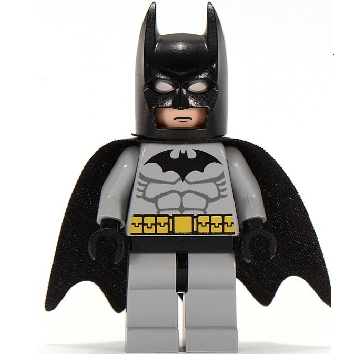
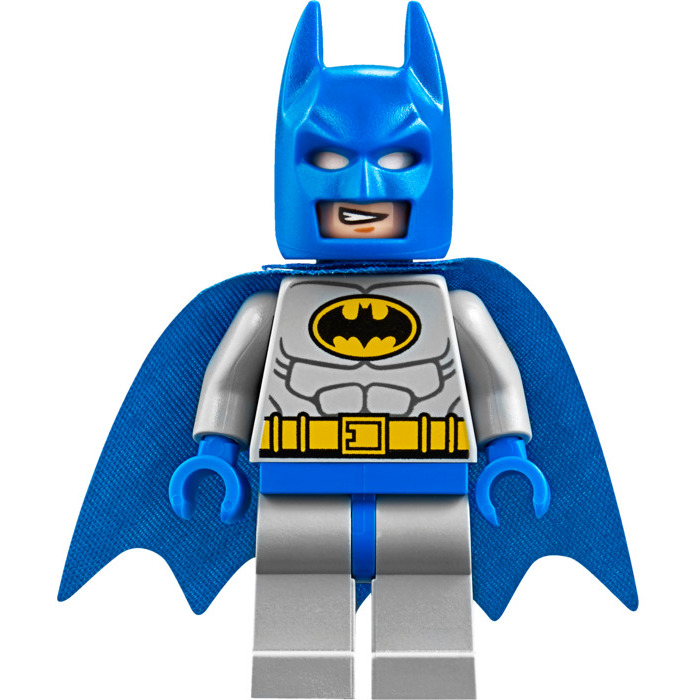
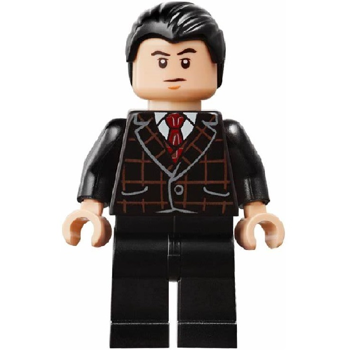

A identidade secreta do Batman é Bruce Wayne, um bilionário americano, playboy, magnata de negócios, filantropo e dono da corporação Wayne Enterprises. Depois de testemunhar o assassinato dos seus pais enquanto criança, Wayne jurou vingança com um ideal de justiça contra os criminosos. Wayne, então, treina física e intelectualmente e cria uma persona inspirada no morcego para combater o crime.[2] Batman opera na cidade fictícia Gotham, sendo ajudado por seu mordomo Alfred Pennyworth, o comissário de polícia Jim Gordon e diversos aliados vigilantes, sendo Robin seu parceiro mais recorrente. Ao contrário da maioria dos super-heróis, Batman não tem superpoderes;
Batman tornou-se popular assim que foi apresentado, acabando por ganhar a sua própria história em quadrinhos em 1940. Enquanto as décadas progrediram, foram surgindo divergências sobre a interpretação do personagem. No final dos anos de 1960, a série de televisão Batman usava uma estética camp, que continuou a ser associada ao personagem muitos anos após o fim da série. Vários criadores trabalharam no sentido de devolver o personagem às suas raízes sombrias, culminando com The Dark Knight Returns (1986), de Frank Miller, seguido por Batman: The Killing Joke (1988), de Alan Moore, e Arkham Asylum: A Serious House on Serious Earth (1989), de Grant Morrison.
Suits mais irados do Batman

Batman padrão

Batman azul

Bruce Waine
O personagem tem motivado os psiquiatras a tentarem entender a sua psique conflituosa. Em maio de 2011, o IGN colocou Batman em #2, atrás do Superman, no Top 100 dos "Melhores Heróis de Todos os Tempos das Histórias em Quadrinhos",[5] tal como a revista Empire na sua lista dos "50 Melhores Personagens dos Quadrinhos".[6] Batman já foi interpretado tanto no cinema como na televisão por Lewis Wilson, Robert Lowery, Adam West, Kevin Conroy, Michael Keaton, Val Kilmer, George Clooney, Christian Bale, Ben Affleck e Robert Pattinson.
Autoria
Anteriormente, Bob Kane era creditado como o criador oficial do Batman, inspirado em um esboço de Leonardo Da Vinci, em heróis pulps como Zorro e O Sombra e o filme The Bat. Porém, é amplamente aceito que o escritor Bill Finger foi decisivo na formação de pontos-chave do herói, como a capa, o capuz, os personagens coadjuvantes, a Batcaverna, o Batmóvel, as roupas negras, o nome civil "Bruce Wayne", o nome e a temática sombria de Gotham e a maioria dos equipamentos que consagraram o Batman, evoluindo-o de um mascarado estereotipado para um dos super-heróis mais lucrativos de todos os tempos.[7]
Artistas de maior destaque